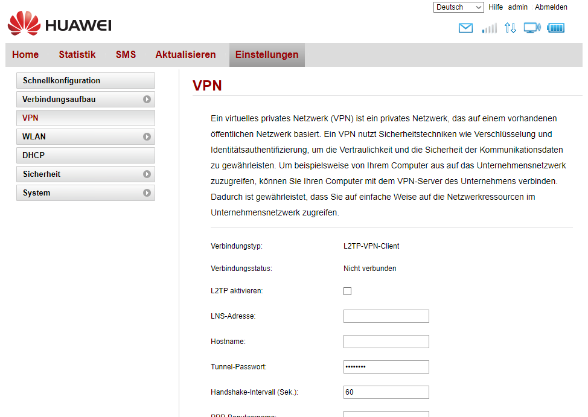

vor 15 Minuten schrieb internetsim:
{kind=link}
Vielen Dank für den Screenshot
 Das hilft natürlich und wie du schon gesagt hast, hast du vollkommen Recht. Das ist nur ein Client und kein Server.
Das hilft natürlich und wie du schon gesagt hast, hast du vollkommen Recht. Das ist nur ein Client und kein Server.
Liebe Community,
ich habe eine "neue" T-Mobile HomeNet-Box (Huawei B529s-23a)
und habe bereits DDNS eingerichtet (läuft).
Nun möchte ich die Box als VPN Server konfigurieren.
Kann mir jemand Informationen geben, wie die Konfiguration zu erfolgen hat?
(Dokumentation darüber habe ich leider keine gefunden)
Herzlichen Dank im Voraus.
Helmi007
Wie meinst du denn als VPN Server?
Wenn du DDNS eingerichtet ist, dann kann du schon mal auf die Box zugreifen und von dort kannst du die Ports weiterleiten auf das Gerät deiner Wahl.
Lg
Ich möchte keine Portweiterleitung auf den PC, sondern von unterwegs (z.B. Hotel WLAN)
über VPN (meines Routers zuhause) ins Internet.
LG - helmi007
Bearbeitet von helmi007Dafür wirst du ein eigenes Gerät brauchen.
Hast du schon mal alle Einstellungen durchsucht, ob du irgendwo den Punkt VPN Server findest? Wenn es diesen Punkt nicht gibt, dann wirst du dir ein Gerät zulegen müssen.
Lg
Dieser Router von Huawei ist einer der ersten von Huawei der VPN kann!
(Es gibt den Menü-Punkt VPN)
Ich möchte nur wissen, wie die Konfiguration zu sein hat.
LG
Also kurz zusammengefasst - du weißt auch nicht wie es funktioniert.
LG
Bearbeitet von helmi007vor 9 Stunden schrieb helmi007:Also kurz zusammengefasst - du weißt auch nicht wie es funktioniert.
LG
Ich hab leider die Box nicht vor mir, sonst könnte ich mir das anschauen - kannst du mir vielleicht Screenshots von der Seite schicken, wo du den VPN Server konfigurieren kannst?
Lg
Es ist ein reiner VPN Client! Kein VPN Server! 
vor 15 Minuten schrieb internetsim:
Vielen Dank für den Screenshot
 Das hilft natürlich und wie du schon gesagt hast, hast du vollkommen Recht. Das ist nur ein Client und kein Server.
Das hilft natürlich und wie du schon gesagt hast, hast du vollkommen Recht. Das ist nur ein Client und kein Server.
vor 6 Stunden schrieb MarioM:Vielen Dank für den Screenshot
Das hilft natürlich und wie du schon gesagt hast, hast du vollkommen Recht. Das ist nur ein Client und kein Server.
Herzlichen Dank für die Info.
In der Zwischezeit ist mir das schon klar geworden.
MfG
vor 20 Minuten schrieb helmi007:Herzlichen Dank für die Info.
In der Zwischezeit ist mir das schon klar geworden.
MfG
Sorry, wir hatten auch nichts mehr von dir gehört, daher war der Status unbekannt

Lg
Ich habe bei mir eine Linux Kiste, wo ein SSH Server drauf läuft. Damit komm ich von außen in mein Netzwerk. Aber ins Internet damit zu gehen wäre sehr träge.
vor 13 Stunden schrieb IT-Freak:Ich habe bei mir eine Linux Kiste, wo ein SSH Server drauf läuft. Damit komm ich von außen in mein Netzwerk. Aber ins Internet damit zu gehen wäre sehr träge.
Kommt natürlich drauf an welchen Upload du zu Hause hast